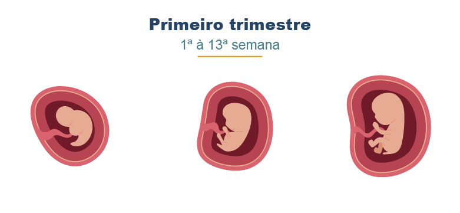

No começo da gestação, ocorre a fecundação, a implantação do embrião e o desenvolvimento dos principais órgãos. O coração começa a bater!
Curiosidade: Ao final do terceiro mês, o bebê já tem dedinhos formados, pode mover os bracinhos e perninhas, e seu rostinho já começa a tomar forma.
 ⬅ Voltar ao Início Avançar para o 2º semestre ➡